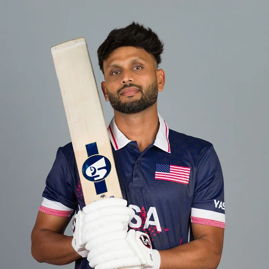
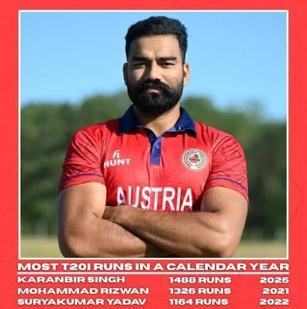
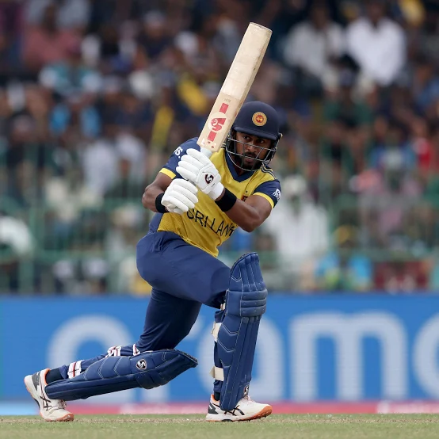

ODI
One Day International (ODI) is a format of cricket, played between two teams with international status, in which each team faces a fixed number of fifty overs, with the game lasting up to 7 hours. The World Cup, generally held every four years, is played in this format. They are major matches and considered the highest standard of List A, limited-overs competition.
T20
Twenty20 (abbreviated T20) is a shortened format of cricket. At the professional level, it was introduced by the England and Wales Cricket Board (ECB) in 2003 for the inter-county competition.[1] In a Twenty20 game, the two teams have a single innings each, which is restricted to a maximum of twenty overs (which is equivalent to 120 legal deliveries per team). Together with first-class and List A cricket. Twenty20 is one of the three forms of cricket recognised by the International Cricket Council (ICC) as being played at the highest level, both internationally and domestically.
Test Match Format
Test cricket is a format of the sport of cricket, considered the game's most prestigious and traditional form. Often referred to as the "ultimate test" of a cricketer's skill, endurance and temperament, it is a first-class format of international cricket where two teams in whites, each representing their country, compete over a match that can last up to five days. It consists of up to four innings (up to two per team), with a minimum of ninety overs scheduled to be bowled in six hours per day, making it the sport with the longest playing time except for some multi-stage cycling races.
Top 2 Batsmen with highest batting average in each format
ODI
Milind Kumar (USA)

RN ten Doeschate (NED)

T20
Karanbir Singh (AUT)

Virat Kohli (IND)

Test Match
DG Bradman (AUS)

PHKD Mendis (SL)
